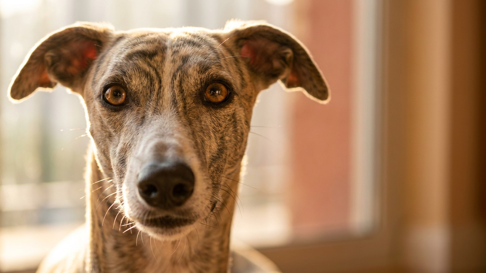

Уиппет развивает 56 км/ч — третья скорость среди всех пород. Видя эту цифру, будущие хозяева решают, что собаке нужны часовые марафоны каждый день. Это главный миф про породу. Уиппет спринтер, а не стайер: ему нужен один короткий взрывной выплеск — а потом он часами лежит на диване тихим тёплым комком. Ниже — как это работает на практике и что важно знать про жизнь с уиппетом в квартире.
🐾 Первая помощь — всегда под рукой
AnimaLife подскажет, что делать в тревожной ситуации с питомцем ещё до визита к врачу. Откройте в один тап.
Уиппет создан для охоты зрением — короткого преследования на максимальной скорости. Его тело оптимизировано под взрыв, а не под монотонный бег. Два-три спринта по 5–7 минут на огороженной площадке или в поле полностью закрывают потребность в движении. После этого пёс расслаблен и спокоен — не потому что устал до изнеможения, а потому что его природная программа выполнена.
У уиппета нет подшёрстка, почти нет подкожного жира, а кожа тонкая и нежная. При температуре ниже 10°C без одежды ему некомфортно — он начинает мёрзнуть всерьёз. Это не капризы, это физиология породы.
🐾 Экономьте на лишних визитах к врачу
Сначала спросите AI-ветеринара в AnimaLife — часто этого достаточно, чтобы понять, нужен ли визит к врачу.
🐾 Понравился разбор?
Подпишитесь на канал — каждый день разбираем по одному тревожному симптому у кошек и собак: что в пределах нормы, а когда пора к врачу. Подпишитесь, чтобы не пропустить разбор, который может спасти здоровье вашего питомца.
Уиппет очень чуткий к интонации и настроению хозяина. Грубый тон, резкий окрик или наказание физикой — и пёс закрывается, теряет доверие, начинает бояться. Порода не для командного стиля воспитания. Работает позитивное подкрепление: поощрение, игра, спокойный голос.
Одиночество уиппет переносит плохо. Если хозяин надолго уходит, пёс скучает по-настоящему — может скулить или искать деструктивный выход. Идеально, если в доме всегда кто-то есть или у собаки есть компания другой собаки.
Дома уиппет почти бесшумен — не лает без повода, не разносит квартиру. По меркам активных пород это действительно спокойный сосед. Но одно условие критично: выплеск должен быть. Уиппет без возможности хотя бы раз в день открыто побегать становится тревожным и беспокойным.